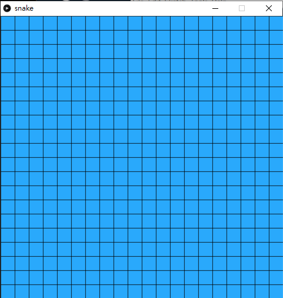
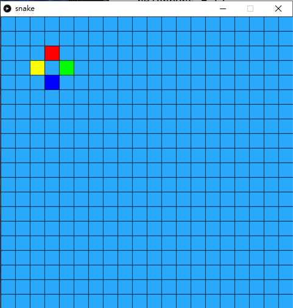

Snake
貪食蛇（Snake）是一個起源於1976年的大型電玩遊戲 Blockade。此類遊戲在1990年代由於一些具有小型螢幕的行動電話的引入而再度流行起來，在現在的手機上基本都可安裝此小遊戲。版本亦有所不同。

Snake1. 創建class和做準備2. 將畫面用spot分格3. 為每個格加上鄰居3.1 特別處理邊介的鄰居3.2 測試完成後，為每個格加上鄰居4. 製作貪食蛇的class5. 令蛇懂得行走6. 加入game over7. 加入目標物蘋果8. 食到蘋果後得分9. 考考你
1. 創建class和做準備
snake.pyde:
x1from spot import *2
3def setup():4 size(600,600)5 6def draw():7 background(50)spot.py:
xxxxxxxxxx41class Spot(object):2 def __init__(self, _x, _y):3 self.x = _x4 self.y = _y2. 將畫面用spot分格
snake.pyde:
xxxxxxxxxx211from spot import *2
3grids = []4
5def setup():6 global grids7 size(600,600)8
9 grids = []10
11 for x in range(20):12 tempGrids = []13 for y in range(20):14 tempGrids.append(Spot(x, y, width/20, height/20))15 grids.append(tempGrids)16 17def draw():18 background(50)19 for x in range(20):20 for y in range(20):21 grids[x][y].show('#29A9FC')spot.py:
xxxxxxxxxx121class Spot(object):2
3 def __init__(self, _x, _y, _w, _h):4 self.x = _x5 self.y = _y6 self.w = _w7 self.h = _h8
9 def show(self, _color):10 stroke(0)11 fill(_color)12 rect(self.x*width/20, self.y*height/20, self.w, self.h)
這個步驟主要是將整個畫面都分成20格x20格。
xxxxxxxxxx51for i in range(20):2 tempGrids = []3 for j in range(20):4 tempGrids.append(Spot(i, j, width/20, height/20))5 grids.append(tempGrids)在setup()中，加入2d array去儲起Spot class，這個格式在第二個遊戲breakout時有做過。
我們在Spotclass的show()中，臨時加上框線來顯示，看看是否正常，debug後就可以不再畫框線，現在則暫時保留。
3. 為每個格加上鄰居
snake.pyde:
xxxxxxxxxx271from spot import *2
3grids = []4
5def setup():6 global grids7 size(600,600)8
9 grids = []10
11 for x in range(20):12 tempGrids = []13 for y in range(20):14 tempGrids.append(Spot(x, y, width/20, height/20))15 grids.append(tempGrids)16 17def draw():18 background(50)19 for x in range(20):20 for y in range(20):21 grids[x][y].show('#29A9FC')22 23 grids[3][3].addNeighbors(grids)24 grids[3][3].neighbors[0].show('#FF0000')25 grids[3][3].neighbors[1].show('#00FF00')26 grids[3][3].neighbors[2].show('#0000FF')27 grids[3][3].neighbors[3].show('#FFFF00')spot.py:
xxxxxxxxxx291class Spot(object):2
3 def __init__(self, _x, _y, _w, _h):4 self.x = _x5 self.y = _y6 self.w = _w7 self.h = _h8 self.neighbors = []9 for i in range(4):10 self.neighbors.append(0)11 12 def show(self, _color):13 stroke(0)14 fill(_color)15 rect(self.x*width/20, self.y*height/20, self.w, self.h)16
17 def addNeighbors(self, _grid):18 #UP19 if (self.y > 0):20 self.neighbors[0] = _grid[self.x][self.y-1]21 # RIGHT22 if (self.x < 19): # Total 20x20, so the max id is 1923 self.neighbors[1] = _grid[self.x+1][self.y]24 # DOWN25 if (self.y < 19): # Total 20x20, so the max id is 1926 self.neighbors[2] = _grid[self.x][self.y+1]27 # LEFT28 if (self.x > 0):29 self.neighbors[3] = _grid[self.x-1][self.y]
由於貪食蛇的蛇身是連著的，而且一定是格的上下左右鄰居的其中一個，要將蛇越拖越長而且記著蛇走過的路，我們首先為每個格都加入鄰居。這也是用class的好處，class自己是可以包含自己的，你剛開一個class，class入面的變數就可以是這個class的本身。
在spot.py中，
xxxxxxxxxx131def addNeighbors(self, _grid):2 #UP3 if (self.y > 0):4 self.neighbors[0] = _grid[self.x][self.y-1]5 # RIGHT6 if (self.x < 19): # Total 20x20, so the max id is 197 self.neighbors[1] = _grid[self.x+1][self.y]8 # DOWN9 if (self.y < 19): # Total 20x20, so the max id is 1910 self.neighbors[2] = _grid[self.x][self.y+1]11 # LEFT12 if (self.x > 0):13 self.neighbors[3] = _grid[self.x-1][self.y]分別加入上、右、下和左四個鄰居，順序是按順時針的。但要留意，如果格剛好在邊介位置，例如最左。最右。最上和最下，就要加入限制，否則就會超出列表的範圍。
在主程式的draw()中，
xxxxxxxxxx51grids[3][3].addNeighbors(grids)2grids[3][3].neighbors[0].show('#FF0000')3grids[3][3].neighbors[1].show('#00FF00')4grids[3][3].neighbors[2].show('#0000FF')5grids[3][3].neighbors[3].show('#FFFF00')特地為grid[3][3]為入鄰居，再將四個鄰居用不同顏色標記出來，用來debug檢查是否正確。值得留意的是，grid[3][3]中的3是array index，index是由0開始的，所以index 3，實際上不是第3格而是第4格。
3.1 特別處理邊介的鄰居
主程式沒有變，spot.py:
xxxxxxxxxx381class Spot(object):2
3 def __init__(self, _x, _y, _w, _h):4 self.x = _x5 self.y = _y6 self.w = _w7 self.h = _h8 self.neighbors = []9 for i in range(4):10 self.neighbors.append(0)11
12 def show(self, _color):13 stroke(0)14 fill(_color)15 rect(self.x*width/20, self.y*height/20, self.w, self.h)16
17 def addNeighbors(self, _grid):18 #UP19 if (self.y > 0):20 self.neighbors[0] = _grid[self.x][self.y-1]21 # RIGHT22 if (self.x < 19): # Total 20x20, so the max id is 1923 self.neighbors[1] = _grid[self.x+1][self.y]24 # DOWN25 if (self.y < 19): # Total 20x20, so the max id is 1926 self.neighbors[2] = _grid[self.x][self.y+1]27 # LEFT28 if (self.x > 0):29 self.neighbors[3] = _grid[self.x-1][self.y]30
31 if (self.y == 0):32 self.neighbors[0] = _grid[self.x][19]33 if (self.x == 19):34 self.neighbors[1] = _grid[0][self.y]35 if (self.y == 19):36 self.neighbors[2] = _grid[self.x][0]37 if (self.x == 0):38 self.neighbors[3] = _grid[19][self.y]


在spotclass的addNeighbors()中，加入如果在邊位時的考量，由於貪食蛇是可以穿牆到畫面的另一邊，故此，邊位的鄰居就是另一邊的格。
xxxxxxxxxx221 def addNeighbors(self, _grid):2 #UP3 if (self.y > 0):4 self.neighbors[0] = _grid[self.x][self.y-1]5 # RIGHT6 if (self.x < 19): # Total 20x20, so the max id is 197 self.neighbors[1] = _grid[self.x+1][self.y]8 # DOWN9 if (self.y < 19): # Total 20x20, so the max id is 1910 self.neighbors[2] = _grid[self.x][self.y+1]11 # LEFT12 if (self.x > 0):13 self.neighbors[3] = _grid[self.x-1][self.y]14
15 if (self.y == 0):16 self.neighbors[0] = _grid[self.x][19]17 if (self.x == 19):18 self.neighbors[1] = _grid[0][self.y]19 if (self.y == 19):20 self.neighbors[2] = _grid[self.x][0]21 if (self.x == 0):22 self.neighbors[3] = _grid[19][self.y]在addNeighbors()加入最底下的四個考量。之後去主頁，將之前測試的格座標改一改，試一試四個邊位是否正確。
3.2 測試完成後，為每個格加上鄰居
snake.pyde:
xxxxxxxxxx251from spot import *2
3grids = []4
5def setup():6 global grids7 size(600,600)8
9 grids = []10
11 for x in range(20):12 tempGrids = []13 for y in range(20):14 tempGrids.append(Spot(x, y, width/20, height/20))15 grids.append(tempGrids)16
17 for x in range(20):18 for y in range(20):19 grids[x][y].addNeighbors(grids)20 21def draw():22 background(50)23 for x in range(20):24 for y in range(20):25 grids[x][y].show('#29A9FC')spot.py:
xxxxxxxxxx381class Spot(object):2
3 def __init__(self, _x, _y, _w, _h):4 self.x = _x5 self.y = _y6 self.w = _w7 self.h = _h8 self.neighbors = []9 for i in range(4):10 self.neighbors.append(0)11
12 def show(self, _color):13 stroke(0)14 fill(_color)15 rect(self.x*width/20, self.y*height/20, self.w, self.h)16
17 def addNeighbors(self, _grid):18 #UP19 if (self.y > 0):20 self.neighbors[0] = _grid[self.x][self.y-1]21 # RIGHT22 if (self.x < 19): # Total 20x20, so the max id is 1923 self.neighbors[1] = _grid[self.x+1][self.y]24 # DOWN25 if (self.y < 19): # Total 20x20, so the max id is 1926 self.neighbors[2] = _grid[self.x][self.y+1]27 # LEFT28 if (self.x > 0):29 self.neighbors[3] = _grid[self.x-1][self.y]30
31 if (self.y == 0):32 self.neighbors[0] = _grid[self.x][19]33 if (self.x == 19):34 self.neighbors[1] = _grid[0][self.y]35 if (self.y == 19):36 self.neighbors[2] = _grid[self.x][0]37 if (self.x == 0):38 self.neighbors[3] = _grid[19][self.y]為方便大家，我將全部程式一次過貼出來。前一步測試完成後，就可以在setup()中，加入:
xxxxxxxxxx31for x in range(20):2 for y in range(20):3 grids[x][y].addNeighbors(grids)為每個格都加入4個鄰居，這個步驟只要做一次就可以了，所以在setup()中完成就可以。在主程式頁面，將原本draw()中的鄰居顯示刪去。
4. 製作貪食蛇的class
snake.pyde:
xxxxxxxxxx341from spot import *2from snake import *3
4grids = []5snake = 06
7def setup():8 global grids, snake, currentSpot, snake9 size(600,600)10
11 grids = []12
13 for x in range(20):14 tempGrids = []15 for y in range(20):16 tempGrids.append(Spot(x, y, width/20, height/20))17 grids.append(tempGrids)18
19 for x in range(20):20 for y in range(20):21 grids[x][y].addNeighbors(grids)22 23 snake = Snake(grids)24 25def draw():26 global grids, snake, currentSpot27
28 background(50)29
30 for x in range(20):31 for y in range(20):32 grids[x][y].show('#29A9FC')33
34 snake.show()snake.py
xxxxxxxxxx131class Snake(object):2 3 def __init__(self, _grids):4 self.grids = _grids5 self.snakeHead = self.grids[10][10]6 self.snakeBody = []7 for i in range(3,0,-1):8 self.snakeBody.append(self.grids[10+i][10])9
10 def show(self):11 for i in range(len(self.snakeBody)):12 self.snakeBody[i].show('#00FF00')13 self.snakeHead.show('#00AA00')spot.py沒有改變，則不再重覆了。

在snake.py的snakeclass中，
xxxxxxxxxx61def __init__(self, _grids):2 self.grids = _grids3 self.snakeHead = self.grids[10][10]4 self.snakeBody = []5 for i in range(3,0,-1):6 self.snakeBody.append(self.grids[10+i][10])將全個畫的的格匯入這個class中，所以開一個同樣叫grids的列表變數。蛇本身有body，而且會隨著吃蘋果越來越長，所有用列表snakeBody來裝起，最後就是蛇頭，只有一個，之後會用來裝起格仔的。
接著初始化，蛇頭預設在畫面中央，所以是grids[10][10]，之後蛇身一開始時有3格(不計蛇頭，額外有3格)。值得注意是: 今次的for是次序相反的，for i in range(3,0,-1):的意思是，由3開始計到0，每次-1，之所以要這樣逆次序，是因為snakeBody是用來紀錄蛇經過的路徑的，snakeBody[0]是蛇尾，也是蛇最舊的路徑。
5. 令蛇懂得行走
snake.pyd
xxxxxxxxxx451from spot import *2from snake import *3
4grids = []5snake = 06
7def setup():8 global grids, snake, currentSpot, snake9 size(600,600)10 frameRate(10)11 12 grids = []13
14 for x in range(20):15 tempGrids = []16 for y in range(20):17 tempGrids.append(Spot(x, y, width/20, height/20))18 grids.append(tempGrids)19
20 for x in range(20):21 for y in range(20):22 grids[x][y].addNeighbors(grids)23 24 snake = Snake(grids)25 26def draw():27 global grids, snake, currentSpot28
29 background(50)30
31 for x in range(20):32 for y in range(20):33 grids[x][y].show('#29A9FC')34
35 snake.show()36
37def keyPressed():38 if (key == CODED and keyCode == UP):39 snake.dirID = 040 if (key == CODED and keyCode == RIGHT):41 snake.dirID = 142 if (key == CODED and keyCode == DOWN):43 snake.dirID = 244 if (key == CODED and keyCode == LEFT):45 snake.dirID = 3snake.py:
xxxxxxxxxx221class Snake(object):2 3 def __init__(self, _grids):4 self.grids = _grids5 self.snakeHead = self.grids[10][10]6
7 self.dirID = 3 #[0:UP, 1:RIGHT, 2: DOWN, 3: LEFT]8 self.next = 09
10 self.snakeBody = []11 for i in range(3,0,-1):12 self.snakeBody.append(self.grids[10+i][10])13
14 def show(self):15 for i in range(len(self.snakeBody)):16 self.snakeBody[i].show('#00FF00')17 self.snakeHead.show('#00AA00')18
19 self.next = self.snakeHead.neighbors[self.dirID]20 self.snakeBody.append(self.snakeHead)21 self.snakeHead = self.next22 self.snakeBody.pop(0)spot.py`沒有變，不再重覆。
在snakeclass中，
xxxxxxxxxx101def __init__(self, _grids):2 self.grids = _grids3 self.snakeHead = self.grids[10][10]4
5 self.dirID = 3 #[0:UP, 1:RIGHT, 2: DOWN, 3: LEFT]6 self.next = 07
8 self.snakeBody = []9 for i in range(3,0,-1):10 self.snakeBody.append(self.grids[10+i][10])加上兩個變數分別為dirID和next， dirID是neighbors的方向，跟之前一樣上、右、下和左四個鄰居，順序是按順時針。而next則是蛇將要行的下一格。
xxxxxxxxxx91 def show(self):2 for i in range(len(self.snakeBody)):3 self.snakeBody[i].show('#00FF00')4 self.snakeHead.show('#00AA00')5
6 self.next = self.snakeHead.neighbors[self.dirID]7 self.snakeBody.append(self.snakeHead)8 self.snakeHead = self.next9 self.snakeBody.pop(0)在下面的show()中，顯示完之後，按照前進方向更新下一個蛇頭位置，之後將現有的蛇頭加入到蛇身，再將現在的蛇頭更新成一下個蛇頭，最後就用pop()，移除蛇身第一個內容(即蛇尾，這就是為何我們一開始要逆次序。
返回在主程式中，
xxxxxxxxxx41def setup():2 global grids, snake, currentSpot, snake3 size(600,600)4 frameRate(10)在setup()之中加入frameRate()，設定動畫影格為10 frame per second。
xxxxxxxxxx91def keyPressed():2 if (key == CODED and keyCode == UP):3 snake.dirID = 04 if (key == CODED and keyCode == RIGHT):5 snake.dirID = 16 if (key == CODED and keyCode == DOWN):7 snake.dirID = 28 if (key == CODED and keyCode == LEFT):9 snake.dirID = 3在程式最下，加上方向鍵控制，改變蛇的dirID就能改變其更新的方向。
6. 加入game over
snake.pyde:
xxxxxxxxxx551from spot import *2from snake import *3
4grids = []5snake = 06
7def setup():8 global grids, snake, currentSpot, snake9 size(600,600)10 frameRate(10)11 12 grids = []13
14 for x in range(20):15 tempGrids = []16 for y in range(20):17 tempGrids.append(Spot(x, y, width/20, height/20))18 grids.append(tempGrids)19
20 for x in range(20):21 for y in range(20):22 grids[x][y].addNeighbors(grids)23 24 snake = Snake(grids)25 26def draw():27 global grids, snake, currentSpot, gameOver28
29 if (snake.gameOver == False):30 background(50)31
32 for x in range(20):33 for y in range(20):34 grids[x][y].show('#29A9FC')35
36 snake.show()37 snake.check()38 else:39 textSize(128)40 textAlign(CENTER, CENTER)41 fill('#FF0000')42 text("GAME" + '\n' + "OVER", width/2, height/2)43
44def keyPressed():45 if (key == CODED and keyCode == UP):46 snake.dirID = 047 if (key == CODED and keyCode == RIGHT):48 snake.dirID = 149 if (key == CODED and keyCode == DOWN):50 snake.dirID = 251 if (key == CODED and keyCode == LEFT):52 snake.dirID = 353 54 if (key == 'r' or key == 'R'):55 setup()snake.py:
xxxxxxxxxx291class Snake(object):2 3 def __init__(self, _grids):4 self.grids = _grids5 self.snakeHead = self.grids[10][10]6
7 self.dirID = 3 #[0:UP, 1:RIGHT, 2: DOWN, 3: LEFT]8 self.next = 09
10 self.snakeBody = []11 for i in range(3,0,-1):12 self.snakeBody.append(self.grids[10+i][10])13
14 self.gameOver = False15
16 def show(self):17 18 for i in range(len(self.snakeBody)):19 self.snakeBody[i].show('#00FF00')20 self.snakeHead.show('#00AA00')21
22 self.next = self.snakeHead.neighbors[self.dirID]23 self.snakeBody.append(self.snakeHead)24 self.snakeHead = self.next25 self.snakeBody.pop(0)26 27 def check(self):28 if self.next in self.snakeBody:29 self.gameOver = True其他兩個分頁spot.py`沒有變。

在snakeclass中，
xxxxxxxxxx31def __init__(self, _grids):2 #other variables3 self.gameOver = False最初始化的最下加入一個變數叫gameOver，設定成False。
xxxxxxxxxx31def check(self):2 if self.next in self.snakeBody:3 self.gameOver = True之後加入一個函數叫check()，用來檢查蛇是否撞到自己。由於我們蛇身都是用一個list去裝起的，所以只要蛇的下一步next包含在snakeBody的陣列中，即蛇撞到自己的蛇身，遊戲結束。
跟之前一樣，將原先draw()中的內容都用if (snake.gameOver == False):包裹，之後加入else:如果輸了就在畫面中央大大隻字顯示game over。
xxxxxxxxxx21if (key == 'r' or key == 'R'):2 setup()最後在keyPressed()中，加入按下r鍵就會重新遊戲。
7. 加入目標物蘋果
snake.pyde:
xxxxxxxxxx721from spot import *2from snake import *3
4grids = []5snake = 06apples = []7
8def setup():9 global grids, snake, currentSpot, snake, apples10 size(600,600)11 frameRate(10)12 13 grids = []14
15 for x in range(20):16 tempGrids = []17 for y in range(20):18 tempGrids.append(Spot(x, y, width/20, height/20))19 grids.append(tempGrids)20
21 for x in range(20):22 for y in range(20):23 grids[x][y].addNeighbors(grids)24 25 snake = Snake(grids)26
27 apples = []28 apples.append(addApple())29
30 31def draw():32 global grids, snake, currentSpot, gameOver33
34 if (snake.gameOver == False):35 background(50)36
37 for x in range(20):38 for y in range(20):39 grids[x][y].show('#29A9FC')40
41 for a in apples:42 a.show('#FF3939')43
44 snake.show()45 snake.check()46 else:47 textSize(128)48 textAlign(CENTER, CENTER)49 fill('#FF0000')50 text("GAME" + '\n' + "OVER", width/2, height/2)51
52def keyPressed():53 if (key == CODED and keyCode == UP):54 snake.dirID = 055 if (key == CODED and keyCode == RIGHT):56 snake.dirID = 157 if (key == CODED and keyCode == DOWN):58 snake.dirID = 259 if (key == CODED and keyCode == LEFT):60 snake.dirID = 361 62 if (key == 'r' or key == 'R'):63 setup()64
65def addApple():66 tempSpot = grids[int(random(20))][int(random(20))]67 68 if (tempSpot in snake.snakeBody or tempSpot == snake.snakeHead or tempSpot in apples):69 println("redraw")70 addApple()71 72 return tempSpot其餘的程式沒有變。

下一個步驟是加入貪食蛇的目標物蘋果。
xxxxxxxxxx71apples = []2
3def setup():4 global grids, snake, currentSpot, snake, apples5 #other things6 apples = []7 apples.append(addApple())一開始宣告一個列表變數叫apples，在setup()中，為其加入一個新的內容。加入新內容時用一個叫addApple()的函數去抽出新的蘋果，下文會詳述。
xxxxxxxxxx81def addApple():2 tempSpot = grids[int(random(20))][int(random(20))]3 4 if (tempSpot in snake.snakeBody or tempSpot == snake.snakeHead or tempSpot in apples):5 println("redraw")6 addApple()7 8 return tempSpot在主頁的最下，加入一個自訂函數叫addApple()。一開始抽出全部grids裡面全部格的一個，接著就要對比一下，這個抽出來的格不能是蛇身，不能不蛇頭，也不能是原本apples已經有的內容，遇到這情況直接call addApple()再抽多一次，否則就return抽到的格。
8. 食到蘋果後得分
snake.pyde:
xxxxxxxxxx811from spot import *2from snake import *3
4grids = []5snake = 06apples = []7
8def setup():9 global grids, snake, currentSpot, snake, apples10 size(600,600)11 frameRate(10)12 13 grids = []14
15 for x in range(20):16 tempGrids = []17 for y in range(20):18 tempGrids.append(Spot(x, y, width/20, height/20))19 grids.append(tempGrids)20
21 for x in range(20):22 for y in range(20):23 grids[x][y].addNeighbors(grids)24 25 snake = Snake(grids)26
27 apples = []28 apples.append(addApple())29
30 31def draw():32 global grids, snake, currentSpot, gameOver33
34 if (snake.gameOver == False):35 background(50)36
37 for x in range(20):38 for y in range(20):39 grids[x][y].show('#29A9FC')40
41 for a in apples:42 a.show('#FF3939')43
44 snake.show()45 snake.check()46 if snake.ate(apples):47 removeID = apples.index(snake.next)48 apples.pop(removeID)49 apples.append(addApple())50 51 textSize(40)52 textAlign(CENTER, CENTER)53 fill('#FFFFFF')54 text(snake.score, width/2, 12)55 else:56 textSize(128)57 textAlign(CENTER, CENTER)58 fill('#FF0000')59 text("GAME" + '\n' + "OVER", width/2, height/2)60
61def keyPressed():62 if (key == CODED and keyCode == UP):63 snake.dirID = 064 if (key == CODED and keyCode == RIGHT):65 snake.dirID = 166 if (key == CODED and keyCode == DOWN):67 snake.dirID = 268 if (key == CODED and keyCode == LEFT):69 snake.dirID = 370 71 if (key == 'r' or key == 'R'):72 setup()73
74def addApple():75 tempSpot = grids[int(random(20))][int(random(20))]76 77 if (tempSpot in snake.snakeBody or tempSpot == snake.snakeHead or tempSpot in apples):78 println("redraw")79 addApple()80 81 return tempSpotsnake.py:
xxxxxxxxxx431class Snake(object):2 3 def __init__(self, _grids):4 self.grids = _grids5 self.snakeHead = self.grids[10][10]6
7 self.dirID = 3 #[0:UP, 1:RIGHT, 2: DOWN, 3: LEFT]8 self.next = 09
10 self.snakeBody = []11 for i in range(3,0,-1):12 self.snakeBody.append(self.grids[10+i][10])13
14 self.gameOver = False15 self.reward = False16 self.score = 017
18 def show(self):19 20 for i in range(len(self.snakeBody)):21 self.snakeBody[i].show('#00FF00')22 self.snakeHead.show('#00AA00')23
24 self.next = self.snakeHead.neighbors[self.dirID]25 self.snakeBody.append(self.snakeHead)26 self.snakeHead = self.next27 if (not self.reward):28 self.snakeBody.pop(0)29 else:30 self.score += 131 self.reward = False32 33 def check(self):34 if self.next in self.snakeBody:35 self.gameOver = True36 37 def ate(self, _apples):38 if (self.next in _apples):39 self.reward = True40 return True41 else:42 self.reward = False43 return False在主程式上，
xxxxxxxxxx181def draw():2 global grids, snake, currentSpot, gameOver3
4 #another codes5
6 snake.show()7 snake.check()8 if snake.ate(apples):9 removeID = apples.index(snake.next)10 apples.pop(removeID)11 apples.append(addApple())12 13 textSize(40)14 textAlign(CENTER, CENTER)15 fill('#FFFFFF')16 text(snake.score, width/2, 12)17 else:18 #another codes在遊戲的後，在snake.show()和snake.check()之後，加入snake.ate()的函數，這個函數會在另一版加入，但現在先做用，這個函數的功能就是告訴你蛇是否有食到蘋果，如果是的話就回傳True，所以如果吃到的話，我們就要找出那一個蘋果是蛇吃到的(初階段只會有一個蘋果，但遊戲之後可以加入多個蘋果)。
xxxxxxxxxx11removeID = apples.index(snake.next)上句的功能，index()是用來找出snake.next的索引，之後就用apples.pop(removeID)將該個索引的蘋果移除，再補一個新的。
之後再加上蛇的分數score，用來告訴蛇吃了多少蘋果。
在另一個分頁，snakeclass中，
xxxxxxxxxx141 def __init__(self, _grids):2 self.grids = _grids3 self.snakeHead = self.grids[10][10]4
5 self.dirID = 3 #[0:UP, 1:RIGHT, 2: DOWN, 3: LEFT]6 self.next = 07
8 self.snakeBody = []9 for i in range(3,0,-1):10 self.snakeBody.append(self.grids[10+i][10])11
12 self.gameOver = False13 self.reward = False14 self.score = 0在gameOver外，再加入另外兩個變數，reward是一個boolean變數，用來蛇當下的收狀態是否正在吃蘋果，而score就是蛇吃了多少蘋果。
xxxxxxxxxx141def show(self):2 3 for i in range(len(self.snakeBody)):4 self.snakeBody[i].show('#00FF00')5 self.snakeHead.show('#00AA00')6
7 self.next = self.snakeHead.neighbors[self.dirID]8 self.snakeBody.append(self.snakeHead)9 self.snakeHead = self.next10 if (not self.reward):11 self.snakeBody.pop(0)12 else:13 self.score += 114 self.reward = False在show()中，比較特別的是，在最後將蛇身長度減少的部分，之前每一次執行show()時，都會更新將蛇前進一格而扣減最後一格，但今次加入rewardboolean變數，如果是False的話，即現階段沒有吃到蘋果，所以照舊要移除最後一格，但如果是吃到蘋果的話，就不用移除最後一格，而且score加一，再將reward變回False，那這個動作就只會執行一次。(這個技術在第四章Flappy Bird時都有介紹過)
xxxxxxxxxx71 def ate(self, _apples):2 if (self.next in _apples):3 self.reward = True4 return True5 else:6 self.reward = False7 return False在最後，加入另一個函數ate()，要將所有的apple匯入，所以中間要加入_apple，因為class是不能使用和招喚global變數的，所以要用這方法去匯入。內容方面，如果匯入的蘋果當中，包含蛇頭(或者next，show()之後兩者是同一格的)，即蛇吃得到蘋果，就回傳True和將reward轉成True。(你也可以在這裡直接回傳需要刪除的蘋果，那在主程式就可以簡潔一點。)
9. 考考你
蛇的行走方向如果是左手邊的話，玩家按右鍵，就會即時game over，同樣情況也出現在其他 方向鍵，加入條件式，防止這個情況，蛇向左行，玩家按右鍵的話不會game over，只會甚麼都沒發生。
score是5的倍數的話，那5n+1關時同一時間就會出現兩顆蘋果，例如第6關, 第11關都會同一時間有2個蘋果。今次的程式是刻意將所有蛇的行為都包圍在
snakeclass中的，你可以試試增加多一條蛇，這條蛇由w,s,a,d鍵作為方向鍵來控制。之後有機會再教大家用AI同一時間有很多條蛇在爭蘋果。